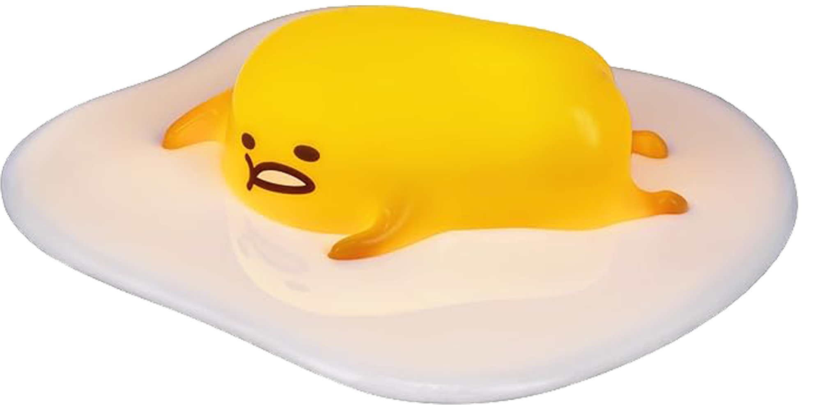
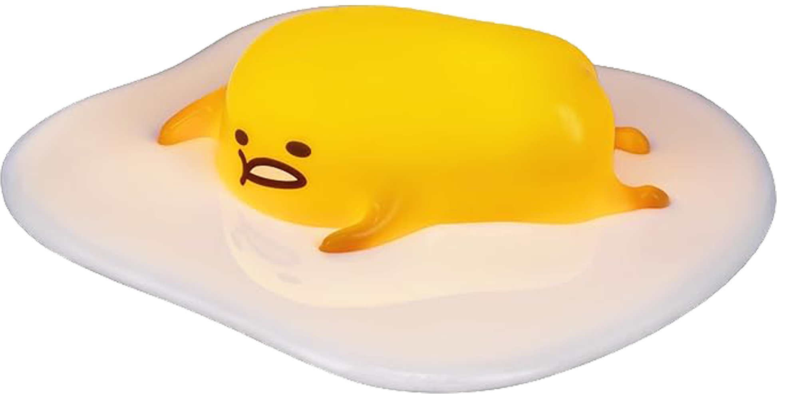
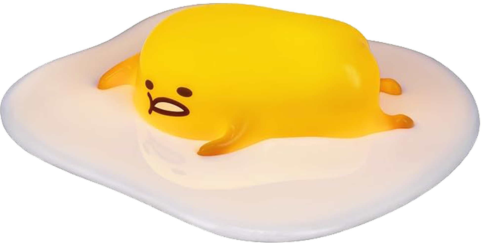
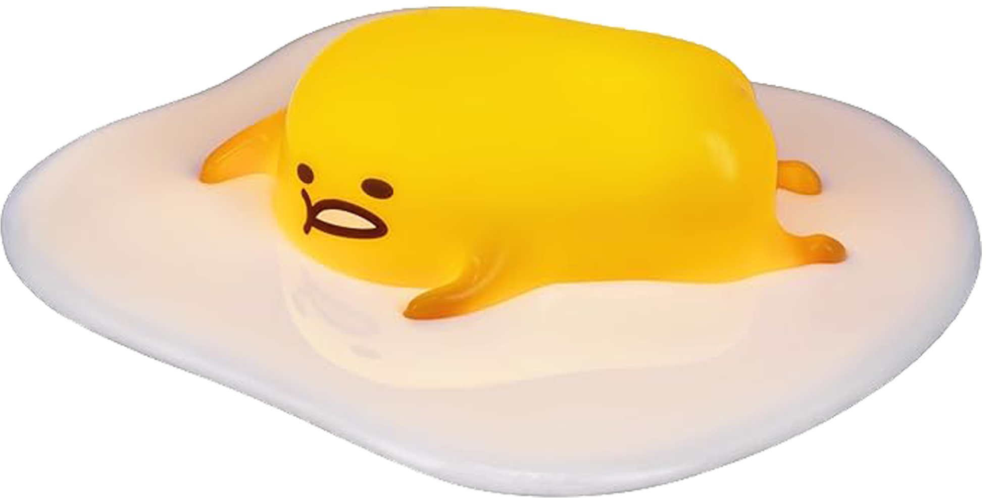

PERSONAJES ICÓNICOS
 



DESCUBRE LOS ICONOS DE LA CULTURA POP JAPONESA

Un viaje a la nostalgia. Aquí convergen los mundos y las criaturas que definieron una era, llevando el diseño japonés de los 90 al corazón de quienes nunca dejaron de soñar.


Pequeños personajes, grandes recuerdos. Aquí celebramos la imaginación sin límites que marcó generaciones.


2013
SANRIO
JAPÓN
Conocido por ser un huevo frito perezoso y desmotivado. Desde su debut se ha convertido en un ícono cultural. Gudetama es famoso por su actitud vaga y su tendencia a quejarse de la vida, lo que lo hace entrañable para muchos.
Web Oficial
1996
BANDAI
JAPÓN
Tamagotchi comenzó como un dispositivo en forma de huevo donde los jugadores cuidaban de una mascota virtual. Se popularizó en los 90, convirtiéndose en un fenómeno cultural y dando lugar a posteriores videojuegos y series.
Web Oficial2001
NINTENDO
JAPÓN
Dobutsu no Mori en Japón("Bosque de los animales"), es un videojuego de simulador donde un ser humano vive en un pueblo de animales antropomórficos. Es popular por sus personajes entrañables y su naturaleza relajante.
Web Oficial1996
DREAMS CO
JAPÓN
Figuras coleccionables de personajes de forma humanoides. Smiski se caracteriza por su apariencia tímida y curiosa que ha ganado popularidad como un objeto decorativo y coleccionable por su entrañable apariencia.
Web Oficial2001
NINTENDO
JAPÓN
Pikmin es un videojuego de Nintendo donde los jugadores controlan a unas simpáticas criaturas. Desde su debut, se han convertido en un emblema de la compañía, apareciendo en varios títulos y ganando popularidad.
Web Oficial2006
NABATA TOSHITAKA
JAPÓN
Estos traviesos gnomos de jardín, se popularizaron con "The Illustrated Book of Kobitos" apareciendo después en juegos de la 3DS. Son muy populares por su apariencia inquietante kimo-kawaii ("feo-cute").
Web Oficial
2006
NINTENDO
JAPÓN
Los Miis son avatares personalizables de Nintendo, introducidos con el debut de la Wii. Su nombre, "Mii," deriva de la palabra inglesa "me" ("yo"). Desde entonces, son un emblema de los videojuegos de los 2000.
Web Oficial1999
SONY
JAPÓN
Toro es la mascota de Sony en Japón. Apareció por primera vez en el videojuego Doko Demo Issyo. Desde entonces, Toro y sus amigos han sido parte de numerosos juegos de Sony, convirtiéndose en íconos culturales.
Web Oficial